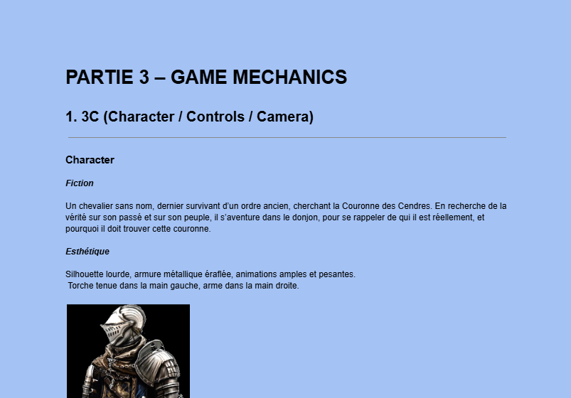

Documentation GDD/GDO
Ashen Steel
Projet fictif conçu pour s’exercer à la documentation professionnelle de jeu vidéo : intentions, piliers, gameplay, direction artistique, mécaniques et expérience joueur.

Pitch
Action-RPG / Dungeon Crawler fictif
Projet fictif conçu pour s’exercer à la documentation professionnelle de jeu vidéo : intentions, piliers, gameplay, direction artistique, mécaniques et expérience joueur.
Ce que j’ai fait
- Création d’une structure de documentation type GDD/GDO
- Définition des piliers de design
- Travail sur la mécanique de torche et la tension d’exploration
- Clarification du gameplay, de l’ambiance et du public cible
Apprentissage
Ce que ce projet montre de mon profil.
Ce projet m’a permis de travailler ma capacité à formaliser une idée de jeu de façon claire, lisible et exploitable par une équipe.
Projet phare
Ashen Steel met surtout en avant ma capacité à documenter.
Ce projet avait pour objectif de construire une documentation professionnelle autour d’un Action-RPG fictif : vision, piliers, gameplay, combat, progression, UX, direction artistique et intentions de design.
Documents & liens
Documents du projet.
Mon rôle en clair
Ce que ce projet dit de moi.
J’ai conçu et documenté la vision de ce projet fictif à travers une documentation de type GDD/GDO, avec un travail sur le gameplay, les mécaniques, l’ambiance et l’expérience joueur.
Compétences démontrées
- Game Design
- Documentation GDD/GDO
- Structuration d’un projet
- Communication d’une vision
- Intentions de gameplay
Voir davantage
Envie d’en voir plus ?
Pour plus de captures, d’informations ou de versions jouables lorsqu’elles sont disponibles, le plus simple est de passer par mon itch.io.